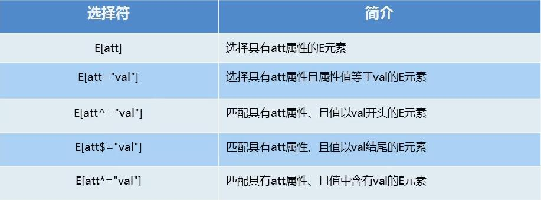
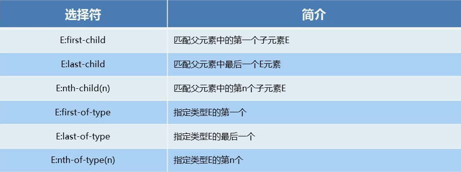
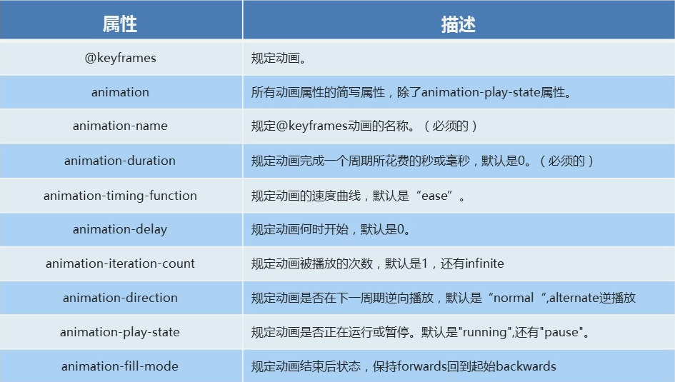
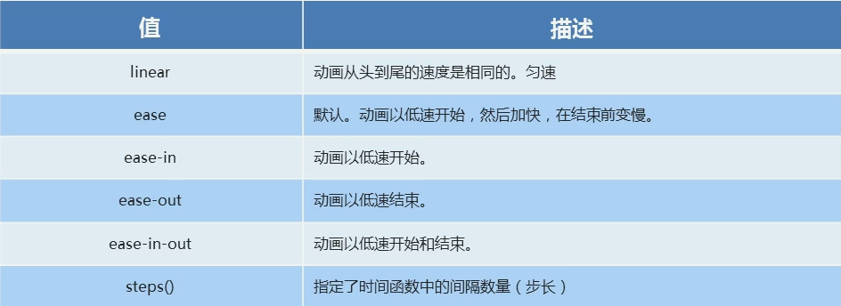

一、CSS3 属性选择器
权重小于id,大于类
补充 :not(p) 选择非 p 的元素
eq.1 [attr]
eq.2 [attr=""]
eq.3 [class^=""]
二、CSS3 结构伪类选择器
Element:nth-child(n) 中的 n 可填:
1. even(偶数)、odd(奇数)
2. 公式(n 从0开始计数),如 2n(偶数),2n + 1(奇数),或其他非线性公式
实际上跟从1开始计数没区别,因为其代表的是一个满足式子的无限数列
注意冒号前的空格：
Element child:nth-child() 代表从 Element 的子元素中选择 child 同类元素
Element child :nth-child() 代表从 Element 的子元素 child 的子元素中选择
:nth-of-type() 同理,注意冒号前的空格
注意：nth-child 不论选择器如何写,括号里的序号从第一个子元素开始算起,无论 tagName
实际上,冒号前紧跟着的为要选择的层级 和 限定的同类元素,空格代表通配
eq.1 first-child last-child nth-child
- 第1个element
- 第2个element
- 第3个element
- 第4个element
eq.2 nth-child
- 第1个element
- 第2个element
- 第3个element
- 第4个element
- 第5个element
- 第6个element
- 第7个element
- 第8个element
- 第9个element
- 第10个element
eq.3 nth-of-type
span1
span2
span3
p1
p2
p3
p4
三、CSS3 伪元素选择器
eq.1 弹出动画
eq.2 小图标
四、CSS3 2D 转换
1.移动 translate (对 inline 无效)
transform: translate(x, y);
eq.1 简单移动 鼠标移动到下盒观察
eq.2 居中
2.旋转 rotate
transform: rotate(deg);
eq.1 简单旋转 鼠标移动到下盒观察
eq.2 制作三角图标 鼠标移动到下盒观察
3.缩放 scale (对 inline 无效)
transform: scale(x倍数, y倍数);
eq.1 简单缩放 鼠标移动到下盒观察
test text
4.改变变换中心 transform-origin
transform-origin: % / top / px;
eq.1 简单旋转 鼠标移动到下盒观察
eq.2 菜单过度,见首页 demo盒子 → https//gaolihai.top/
5.转换综合（多个过程）
transform: translate() rotate() scale() ...;
translale 要放在第一位
注意顺序,由于先前的转换效果会影响后来的转换,故顺序不对将导致异常行为。
五、CSS3 动画
1.动画
animation: ;
eq.1 简单动画
eq.2 波纹
2.animation-timing-function 详解
eq.1 各 v-t 曲线对比
linear
ease
ease-in
ease-out
ease-in-out
eq.2 steps 动画分步 打字
事件委派的定义就是，把原来加给子元素身上的事件绑定在父元素身上，就是把事件委派给父元素。换句话说，就是把一个本来让下属干的事情交给上司做了。
eq.3 steps 动画分步 逐帧切换

六、CSS3 3D 转换
eq.1 沿 Z 轴移动
aaaaaa
eq.2 3D 旋转
aaaaaa
eq.3 书翻开效果
同见 demo → https://gaolihai.top/demo/book3d.htmleq.4 3D 旋转
rotate(x , y, z, deg)
aaaaaa
eq.5 3D 呈现
transform-style: ;
注意：绝对定位会影响 3D 效果，盒子的位置决定我们是从哪个角度来观察的
3D 呈现用于给盒子（父盒子）立体化
鼠标移动到下盒观察
· 未设置 transform-style: perserve-3d;
aaaaaa
aaaaaa
· 设置 transform-style: perserve-3d;
aaaaaa
aaaaaa
eq.6 两面翻转
把盒子摞在一起 鼠标移上观察效果
注意，一定要将透视给到被变换的父盒上
否则透视关系不随盒子变换而改变
还会导致，translate 的值在父盒子旋转后并不会正常呈现，这是由于在 3D 空间中字体距观察点的距离和字体大小呈非线性关系，而旋转时透视关系并未改变。
正
反
eq.7
front
top
eq.8 旋转
注意：盒子的 x y z 轴以自身旋转朝向为准
perspective-origin: 50% 50%(default); 设置透视视角。意为 x y 轴位置，默认均为 50%
1
2
3
4
5
6
7
8
七、CSS3 浏览器私有前缀
浏览器私有前缀用于兼容老版本
- -moz- firefox
- -ms- ie
- -mebkit- safari chrome
- -o- opera